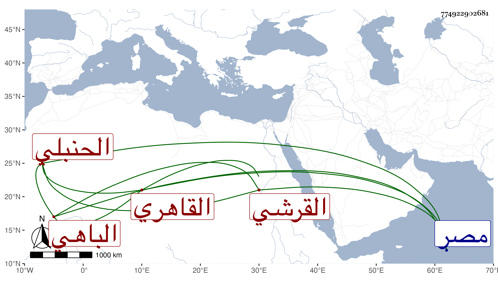

0902Sakhawi.DawLamic.ITO20230111-ara1.EIS1600.774922902681
Biography ID: 774922902681
546
محمد بن محمد بن محمد بن عبد الدائم نجم الدين أبو عبد الله بن الشمس بن النجم القرشي الباهي ثم القاهري الحنبلي والد أبي الفتح محمد الآتي . اشتغل كثيرا وسمع على أبي الحسن العرضي وجماعة وطلب بنفسه وقرأ الكثير وشارك في العلوم . قال شيخنا في إنبائه وسمع من شيوخنا ونحوهم وعني بالتحصيل ودرس وأفتى وكان له نظر في كلام ابن العربي فيما قيل . مات في شعبان سنة اثنتين عن ستين سنة . وقال في معجمه أنه أنجب ولده وسمعت بقراءته ومن فوائده . وكان حسن السمت جميل العشرة . وقال ابن حجي : كان أفضل الحنابلة بالديار المصرية وأحقهم بولاية القضاء ، قلت وقد قرأ على البلقيني بالشيخ العالم المحقق مفتي المسلمين جمال المدرسين . وقال المقريزي في عقوده أنه رافقه في قراءة الجمل للخونجي على الولوي بن خلدون ثم لم نزل متصاحبين حتى مات وهو ممن عرف بالخير ولين الجانب رحمه الله .
